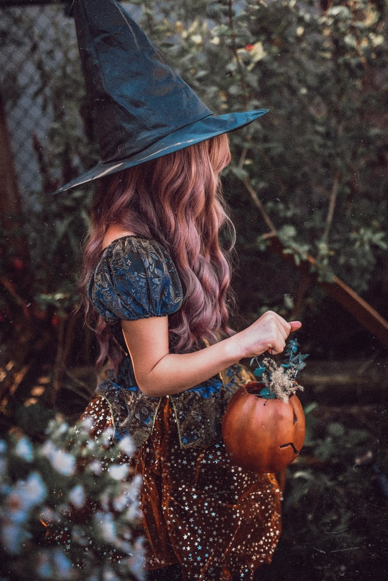

HALLOWEEN COSTUMES
Halloween costumes are traditionally modeled after supernatural figures such as vampires, monsters, ghosts, skeletons, witches, and devils. Over time, the costume selection extended to include popular characters from fiction, celebrities, and generic archetypes such as ninjas and princesses.Dressing up in costumes and going "guising" was prevalent in Scotland and Ireland at Halloween by the late 19th century. A Scottish term, the tradition is called "guising" because of the disguises or costumes worn by the children. In Ireland the masks are known as 'false faces'. Costuming became popular for Halloween parties in the US in the early 20th century, as often for adults as for children, and when trick-or-treating was becoming popular in Canada and the US in the 1920s and 1930s.
Eddie J. Smith, in his book Halloween, Hallowed is Thy Name, offers a religious perspective to the wearing of costumes on All Hallows' Eve, suggesting that by dressing up as creatures "who at one time caused us to fear and tremble", people are able to poke fun at Satan "whose kingdom has been plundered by our Saviour". Images of skeletons and the dead are traditional decorations used as memento mori.